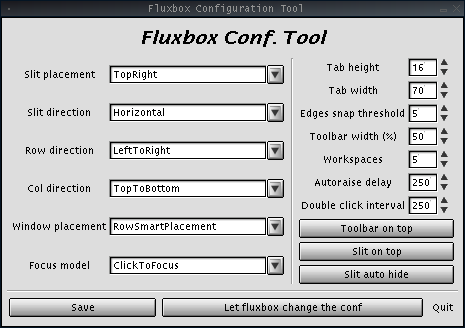
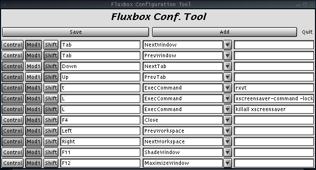
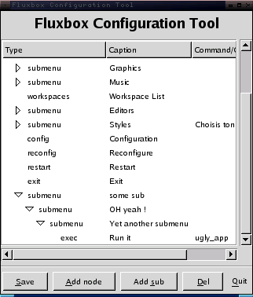

FluxConf

HOWTO: Just change your config then press "save".
For now you need to "restart" fluxbox to apply changes.
When you are satisfied press "Let fluxbox change the conf" and "Quit".
FluxKeys

HOWTO: Press "Add" to add an entry, then fill the needed stuff
If you want to remove some entry just let the key entry blank (the first one after modifiers)
Press "Save" to save your work then you only need to "reconfigure" fluxbox.
FluxMenu
